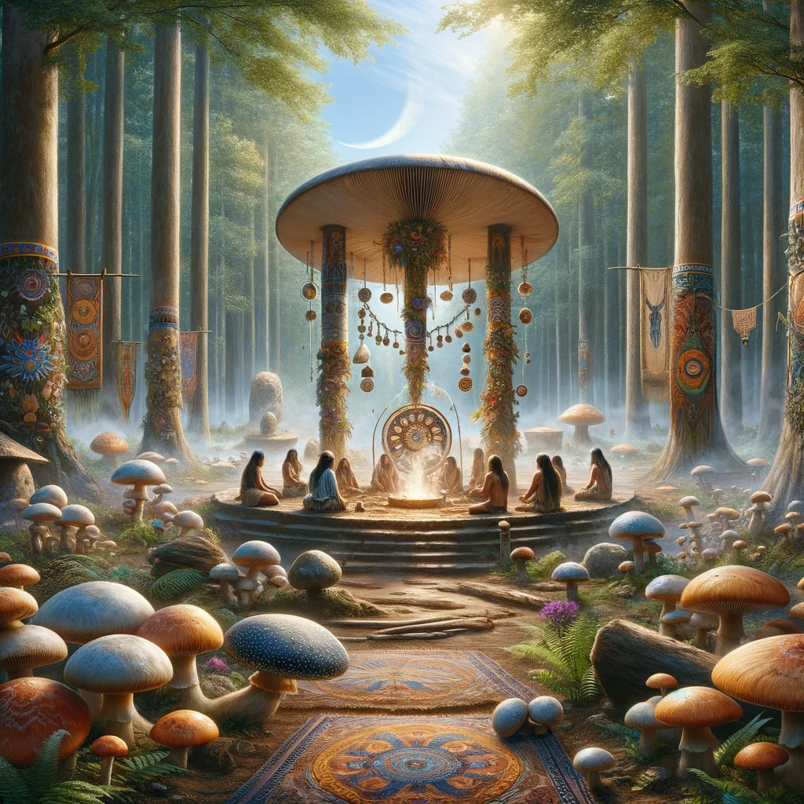

<style>
   .animated-grid {
  height: 85vh;
  margin-bottom: 200px;

  display: grid;
  gap: 1rem;

  /* Explicit grid */
  grid-template-areas:
    'a  b  c  d'
    'l  🌟 🌟 e'
    'k  🌟 🌟 f'
    'j  i  h  g';

  grid-template-rows: repeat(4, 25%);
  grid-template-columns: 240px auto auto 240px;

  --stagger-delay: 100ms;
}

@keyframes cardEntrance {
  from {
    opacity: 0;
    transform: scale(0.3);
    filter: hue-rotate(180deg);
  }
  to {
    opacity: 1;
    transform: scale(1);
    filter: hue-rotate(0deg);
  }
}

.card {
  background-color: rgb(36, 243, 147);
  animation: cardEntrance 700ms ease-out;
  animation-fill-mode: backwards;
}

.card:nth-child(1) {
  grid-area: a;
  animation-delay: calc(1 * var(--stagger-delay));
}
.card:nth-child(2) {
  grid-area: b;
  animation-delay: calc(2 * var(--stagger-delay));
}
.card:nth-child(3) {
  grid-area: c;
  animation-delay: calc(3 * var(--stagger-delay));
}
.card:nth-child(4) {
  grid-area: d;
  animation-delay: calc(4 * var(--stagger-delay));
}
.card:nth-child(5) {
  grid-area: e;
  animation-delay: calc(5 * var(--stagger-delay));
}
.card:nth-child(6) {
  grid-area: f;
  animation-delay: calc(6 * var(--stagger-delay));
}
.card:nth-child(7) {
  grid-area: g;
  animation-delay: calc(7 * var(--stagger-delay));
}
.card:nth-child(8) {
  grid-area: h;
  animation-delay: calc(8 * var(--stagger-delay));
}
.card:nth-child(9) {
  grid-area: i;
  animation-delay: calc(9 * var(--stagger-delay));
}
.card:nth-child(10) {
  grid-area: j;
  animation-delay: calc(10 * var(--stagger-delay));
}
.card:nth-child(11) {
  grid-area: k;
  animation-delay: calc(11 * var(--stagger-delay));
}
.card:nth-child(12) {
  grid-area: l;
  animation-delay: calc(12 * var(--stagger-delay));
}
.card:last-child {
  grid-area: 🌟;
  animation-delay: calc(13 * var(--stagger-delay));
}
.card img {
    width: 100%; /* Make image fill the card */
    height: 100%; /* Maintain aspect ratio */
    display: block; /* Remove any extra space below the image */
    object-fit: cover; /* Ensures the image covers the area without distortion */
    object-position: center; /* Centers the image within the element */

}

</style>

<section class="animated-grid">
    <div class="card"></div>
    <div class="card"></div>
    <div class="card"></div>
    <div class="card"></div>
    <div class="card"></div>
    <div class="card"></div>
    <div class="card"></div>
    <div class="card"></div>
    <div class="card"></div>
    <div class="card"></div>
    <div class="card"></div>
    <div class="card"></div>
    <div class="card"></div>
</section>
